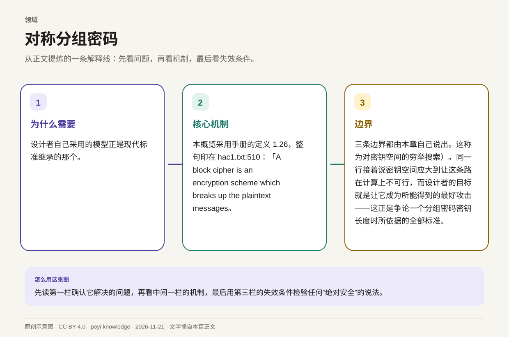

原理与机制
领域：对称分组密码（Symmetric Block Ciphers）。本概览采用手册的定义 1.26，整句印在 hac1.txt:510：「A block cipher is an encryption scheme which breaks up the plaintext messages to be transmitted into strings (called blocks) of a fixed length t over an alphabet A, and encrypts one block at a time.」（分组密码是这样一种加密方案：把要传输的明文消息切成字母表 A 上定长 t 的串（称为分组），并一次只加密一个分组）。全部结构由两个参数承担——分组长 t 与字母表 A——而定长这一点，正是下文的包装工作要为不是整数个分组的消息去解决的事。上一行把这个族放进对称加密的二分法中：「There are two classes of symmetric-key encryption schemes which are commonly distinguished: block ciphers and stream ciphers.」（通常区分类对称密钥加密方案：分组密码与流密码）（hac1.txt:509）。下一行既宣称这一族的主导地位，也给出它的内部结构：「Most well-known symmetric-key encryption techniques are block ciphers.」（最广为人知的对称密钥加密技术都是分组密码），以及 「Two important classes of block ciphers are substitution ciphers and transposition ciphers」（分组密码的两个重要类别是代替密码与转置密码）（hac1.txt:511）。关于这一行的三点交代：紧随其后的括注节号放在引号外，因为本抽取件在那处把节号符号印成非 UTF-8 字节；同一行接着说乘积密码把这两类合起来，但那句要到 hac1.txt:518 才收束，中间夹着 :512 的版权脚注与 :514-516 的页眉，故只转述不引用；而这种以字母表为参数的形式是古典写法，现代标准所用的位串形式见下一节。

为什么重要
设计者自己采用的模型正是现代标准继承的那个。rijndael-design.txt:710 把分组密码写作置换族：首句的分组长与密钥长带下标，本抽取件把下标压到基线，故此处转述；被引用的紧随其后的那一无下标分句是 「This set contains a Boolean permutation for each value of the cipher key k.」（对密钥 k 的每一个取值，该集合包含一个布尔置换）。每个密钥对应一个置换——同一算法因而是许多个密码，而解密恰为逆置换。设计理由随后以清单给出，引入句在 :715：「For a block cipher to be up to its task, it has to fulfil two requirements:」（一个分组密码要称职，必须满足两条要求）；第一项是效率（置换及其逆在广泛平台上都高效，:716，此处转述），第二项是 「2.Security.It must be impossible to exploit knowledge of the internal structure of the cipher in cryptographic attacks.」（2.安全性：必须不可能在密码攻击中利用对密码内部结构的了解）（:717）。一个对象如何同时满足两者？靠迭代：「All block ciphers of any significance satisfy these requirements by iteratively applying Boolean permutations that are relatively simple to describe.」（一切有意义的分组密码都通过反复施加描述相对简单的布尔置换来满足这两条要求）（:718），并在 :722 得到命名：「In an iterative block cipher, the Boolean permutations are iterative.The block cipher is defined as the application of a number of key-dependent Boolean permutations.The Boolean permutations are called the round transformations of the block cipher.」（迭代分组密码中，这些置换是迭代的；密码由若干密钥相关布尔置换的施加来定义，这些置换称为轮变换）。一层简单结构反复叠加，因而可以逐层分析——这正是本领域能就轮数展开论证的原因。最后是包装的设计理由：「A disadvantage of the ECB mode is that if the message has two blocks with the same value, so will the cryptogram.」（ECB 模式的缺点在于，消息中若有两个分组取值相同，密文中也会出现相同的分组）（rijndael-design.txt:816），该行后面的句子说明 CBC 正是因此被提出：先与前一密文分组异或再施加置换；:817 补充 ECB 与 CBC 都要求整数个分组、因而附带填充代价，此处不加引用地陈述。
应用与实例
术语表用三个词目说清了原语、族的成员与包装方式，本概览的用途故事取自它们，而不是取自某个具体密码。在 block cipher 词目（rfc4949.txt:2107）下，定义是 「An encryption algorithm that breaks plain text into fixed-size segments and uses the same key to transform each plaintext segment into a fixed-size segment of cipher text.」（把明文切成定长段、用同一密钥把每个明文段变换成定长密文段的加密算法），同一条目以举例方式点出这一族：「Examples: AES, Blowfish, DEA, IDEA, RC2, and SKIPJACK.」（例如 AES、Blowfish、DEA、IDEA、RC2 与 SKIPJACK）（:2110-2111）——这里只把它报告为该术语表自己的成员清单，不对这些密码多说一字，它们在本目录各有自己的行。包装写在同条目的 Tutorial 行：「A block cipher can be adapted to have a different external interface, such as that of a stream cipher, by using a mode of cryptographic operation to package the basic algorithm.」（借助一种密码工作模式来包装基本算法，分组密码可被改造成不同的外部接口，例如流密码那样的接口）（:2114-2117），而 mode of operation 词目在 :10821-10824 从功能上重述为 「A technique for enhancing the effect of a cryptographic algorithm or adapting the algorithm for an application, such as applying a block cipher to a sequence of data blocks or a data stream.」（增强密码算法效果或使算法适应某种应用的技术，例如把分组密码作用于数据块序列或数据流）。这一句就是用途的答案：分组密码作为部件被装进各种模式，处理数据块序列或数据流。对照词目是 :16359-16364 的 stream cipher；:6447-6451 的 electronic codebook 则定义了最朴素的包装——明文分组直接进、输出分组直接出——那条只按行号引用而不加标记，因为它的正文以方括号的来源键收尾。两点交代：引文里连续的空格是本文件六空格续行缩进在跨行拼接后留下的原样，不是笔误；术语表卷首在 :35-36 声明其中的建议与具体解释属于作者本人、并非 IETF 官方立场，故上文没有一条被当作安全性断言。
边界与攻击面
三条边界都由本章自己说出。第一条是穷举，定义在 hac1.txt:436：「An encryption scheme can be broken by trying all possible keys to see which one the communicating parties are using (assuming that the class of encryption functions is public knowledge).This is called an exhaustive search of the key space.」（假定加密函数类是公知的，一种加密方案可以靠试遍所有密钥、看哪一个是通信双方所用的而被破掉；这称为对密钥空间的穷举搜索）。同一行接着说密钥空间应大到让这条路在计算上不可行，而设计者的目标就是让它成为所能得到的最好攻击——这正是争论一个分组密码密钥长度时所依据的全部标准。第二条边界是缺乏证明：本章在列举公钥加密的缺点时，于 hac1.txt:1008 用一个括注顺带承认了对称一侧的同样处境——「No public-key scheme has been proven to be secure (the same can be said for block ciphers).」（没有公钥方案被证明是安全的（分组密码同样如此）。这份让步是对称的，也是该条目不对整个类别陈述安全定理的原因。第三条是与信息论安全之间的差距：「A necessary condition for a symmetric-key encryption scheme to be unconditionally secure is that the key be at least as long as the message.」（对称密钥加密方案要无条件安全，一个必要条件是密钥至少与消息一样长）（hac1.txt:1543）——定密钥的分组密码对长于密钥的消息无法满足这一条；本章的一般性结论在 hac1.txt:1550 继续写道 「do not offer perfect secrecy, and each ciphertext character observed decreases the theoretical uncertainty in the plaintext and the encryption key.」（一般加密方案不提供完美保密，每观察到一个密文字符都会降低明文与加密密钥的理论不确定度）；该引文从所属行的行首开始，因为这句话的前半留在上一页，中间隔着 :1546 的脚注与 :1548 的页眉。这里刻意不写的东西：任何具体密码的攻击复杂度，以及差分、线性分析的数字——那些量与个别设计及其轮数绑定，属于各密码行，不属于这份概览。
历史与背景
登记件能让这份概览定年的，是包装方式的标准化，而不是任何一个密码。该建议在 sp800-38a.txt:72-74 自陈范围：「This recommendation defines five confidentiality modes of operation for use with an underlying symmetric key block cipher algorithm: Electronic Codebook (ECB), Cipher Block Chaining」（本建议定义五种保密性工作模式，用于作为底层的对称密钥分组密码算法：电码本 ECB、密码分组链接）；清单在下一行继续列出 CFB、OFB 与 CTR，故引文止于行尾。它改了什么，是相对一个前件说出的（:303-304）：「FIPS Pub.
逐步示例与核验
范围模型
列出属于该条目的代表实体、相邻实体、时间断点与跨域关系；范围外对象不并入。
参考出处
- Wikipedia search entry for 对称分组密码. https://zh.wikipedia.org/w/index.php?search=%E5%AF%B9%E7%A7%B0%E5%88%86%E7%BB%84%E5%AF%86%E7%A0%81
- A Brief History of Cryptology and Cryptographic Algorithms (Dooley, Springer 2013). https://link.springer.com/book/10.1007/978-3-319-01628-3